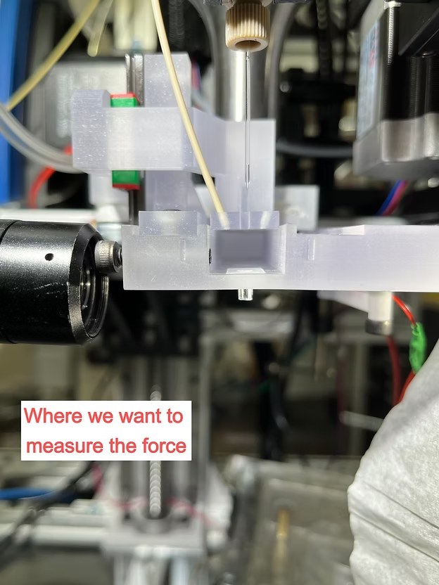
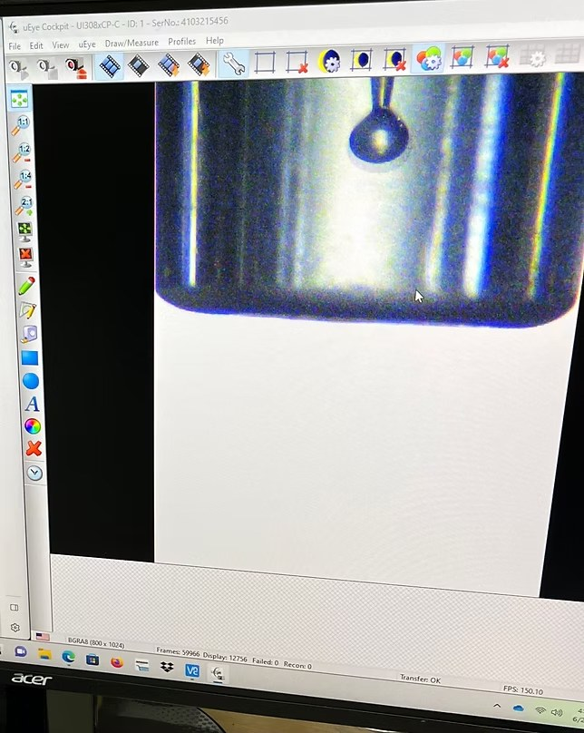
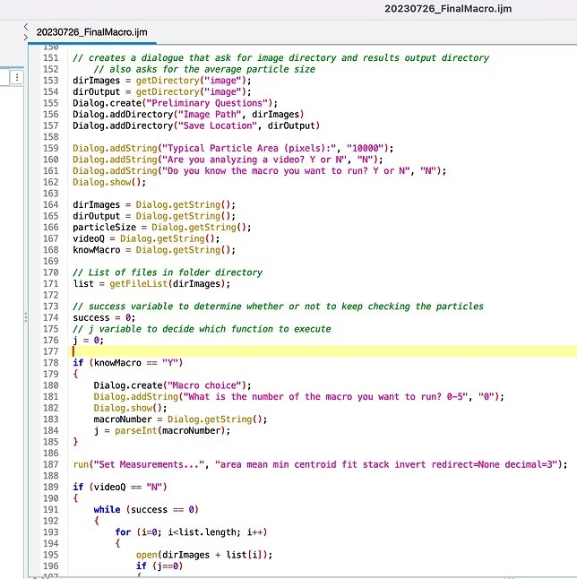

AcousticaBio · Jan 2023 – Aug 2023
System Analysis & Data Analysis
Problem
My team needed to measure the acoustophoretic force our printer was producing at the droplet's point of detachment from the nozzle. Directly measuring this would require placing a microphone inside a 1.5mm cylindrical chamber — which wasn't feasible for three reasons:
A microphone inside the chamber would affect the acoustic field, producing incorrect readings.
Placing a microphone directly below the nozzle would prevent any droplet from forming at all.
The 1.5mm diameter constraint made fitting a microphone in the cylinder physically impractical.
Action
Since a microphone wouldn't work, I needed a non-contact approach. I curated camera presets to capture video of droplets right below the nozzle — at that position they are fully formed — and used the footage to calibrate pixels to microns.
I used ImageJ (IJM) to write a macro that analyzed the videos and output a CSV file of the droplet areas on screen. Because droplet volume is dependent on the acoustophoretic force, I was able to calculate the force the printer was producing from those measurements.
I wrote a Python script that converted the droplet measurements in the CSV files from pixels to microns and produced statistics on average force and force covariance across all droplets.
Outcome
I produced a reliable, non-invasive method to measure the acoustophoretic force our printer was generating — without affecting the acoustic field. The Python script and IJM macro together made it efficient to produce charts and statistics on printer performance on demand.
Photos

An image of where we wanted to measure the acoustophoretic force.

Desktop showing a blown up version of a droplet on the nozzle tip.

Snippet of the IJM macro used to analyze videos of droplets from the printer.